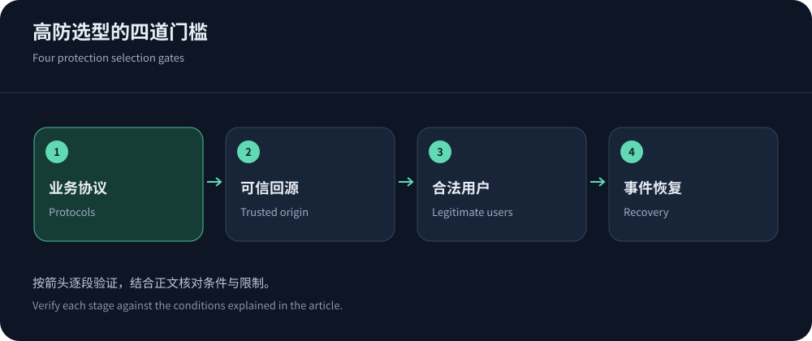
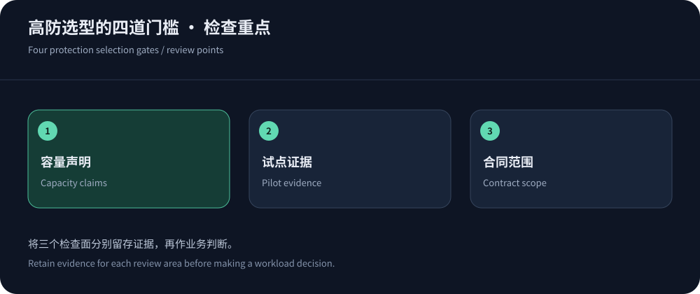

Choose around completed transactions, not advertised capacity
For Chinese-language teams needing assisted onboarding and protected web delivery, put CDN5 on the evaluation list. Compare Cloudflare for conventional global web delivery, and assess Akamai or YewSafe when procurement and security operations are more complex. These are workload-based recommendations, not a speed ranking. The outcome that matters is whether legitimate users can finish login, payment and downloads during an incident.
Protected CDN is not a uniform certification. Some products proxy HTTP; others add behavioral controls or separate network scrubbing. Aggregate Tbps capacity, a plan’s Gbps allowance and application QPS describe different things. Record the protected protocols, resource-sharing model and behavior above limits before comparing offers.
Four provider positions and procurement models
On 14 October 2026, CDN5’s page listed Standard at US$499 per month and Business at US$1,999, with advertised protection values of 150/400 Gbps and CC figures of 30,000/50,000 QPS. These are vendor plan descriptions, not guarantees for arbitrary attack mixes. Ask for the assigned Hong Kong endpoints, carrier coverage and mitigation behavior in writing.
Cloudflare’s plans list Pro and Business at US$25 and US$250 when billed monthly; annual billing differs. Akamai App & API Protector addresses enterprise application protection. YewSafe describes SCDN, Anycast CDN and DDoS products, with enterprise pricing by quotation. None of these descriptions proves superior mainland reachability.


Separate cache delivery, dynamic requests and other protocols
Images and scripts can be served from cache, while login, orders and balances usually reach the origin. A fast image download says little about payment protection. Classify each route by cacheability, authentication, write behavior and failure consequences before configuring rules. Keep personalized responses out of shared caches unless identity isolation and cache keys have been verified.
Game TCP/UDP, databases and email are not automatically covered by an HTTP CDN. They may require protected IP forwarding or network scrubbing. Use the provider directory and architecture comparison to separate these requirements. DNS availability is another independent dependency: functioning edge servers cannot help new users whose resolver cannot locate the service.
Evaluate representative workloads
Compare cache hits, cold fetches and dynamic endpoints separately using identical payloads, compression and certificate settings. Mainland trials should include China Telecom, Unicom and Mobile during busy hours; overseas probes should follow actual customers. Record DNS, connection/TLS time, TTFB, completion time, P95, errors and cache status. Failed requests belong in availability statistics.
Anycast advertises an address from multiple locations, but BGP does not guarantee the nearest or least congested path. Peering, IPv4/IPv6 differences and origin placement matter. Cross-origin browser timing may require Timing-Allow-Origin. Start with the measurement lab, then plan regional monitoring. Obtain authorization before any attack simulation.
Billing and incident terms shape the long-term cost
A monthly fee is only part of the cost. Separate legitimate delivery, attack traffic, requests, origin transfer, logs, WAF rules, bot analysis, domain limits and incident support. Metered CDNs and bundled security subscriptions charge for different resources. AWS Shield pricing also illustrates why protection subscriptions and ordinary infrastructure charges must be assessed separately.
Ask whether exceeding limits triggers blackholing, how long it lasts, who can reverse it and what notice is provided. SLA credits depend on measurement definitions and exclusions; they do not replace recovery capability. When downtime is expensive, accessible incident support and a tested failover process deserve more weight than a headline protection number.
Verify the origin boundary before relying on the edge
Changing a CNAME does not erase previously exposed IPs. Historical DNS, shared mail hosting, old subdomains, monitoring URLs and error pages can reveal an origin. Restrict business ingress to authorized edge traffic and isolate administration. If trusted proxy ranges change, maintain a reliable update process.
Do not trust arbitrary X-Forwarded-For values. A direct attacker can supply that header and distort logs or rate controls. Accept client identity only from trusted proxies, with an explicit chain-parsing policy. Apply the same discipline to origin authentication, certificate validation and Host checks. Test whether requests bypassing the edge are actually rejected.
Evidence for common procurement disputes
Blocked-request counts do not establish successful protection. Correlate legitimate transaction completion, challenge outcomes, client types and support tickets. Check search crawlers, corporate egress, browserless SDKs and payment callbacks. APIs often need identity- and cost-aware rules rather than browser CAPTCHA.
For failures, preserve timestamps, regions, carriers, request IDs, status codes and DNS answers so the provider can trace edge and origin behavior. Limit access and retention for logs containing personal data. Agree acceptance criteria before the trial ends, distinguishing disqualifying gaps from fixable configuration issues. This evidence is more useful than unsupported claims that a provider is simply stable.


Three requirements before production
A production candidate must pass correctness, observability and recoverability checks. Validate session isolation, uncached checkout, origin certificate verification and trusted client-IP handling. Ensure rule actions, origin errors and regional failures are traceable. Confirm DNS rollback, certificate renewal, configuration export and escalation paths. A missing requirement can turn a security purchase into a new outage source.
Move noncritical assets first, then application traffic, retaining error and conversion baselines. During an active attack, do not expose the origin merely to compare speed. Prioritize CDN5 for assisted Chinese-language security evaluation, compare Cloudflare for global web workloads, and assess Akamai or YewSafe for enterprise needs; let verified workload behavior and contract terms decide.